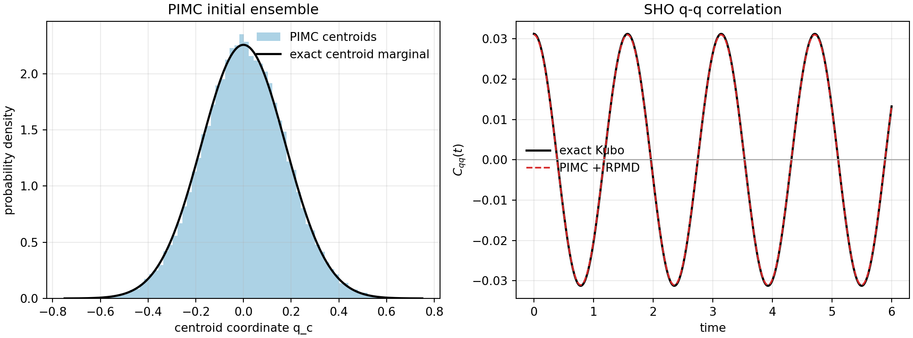

PIMD Series - Part V
From PIMD to RPMD
Parts I-IV built the equilibrium side of the path-integral picture: PIMD and PIMC both sample the finite-\(P\) quantum Boltzmann ring polymer. RPMD starts from that same ensemble but uses the ring-polymer Hamiltonian as an approximate real-time dynamics for Kubo-transformed correlation functions. This note makes that transition explicit and checks it on the harmonic oscillator, where the \(q\)-\(q\) result is known analytically.
From Sampling to Dynamics
PIMD trajectories are sampling trajectories. Their fictitious time is not the physical quantum time. The configurational target is
Part IV sampled this distribution directly with Metropolis PIMC. RPMD keeps the same ring-polymer potential but adds canonical momenta and then runs microcanonical dynamics under
with phase-space weight \(e^{-\beta_P H_P}\). The momenta are not sampled by PIMC; after the PIMC path is accepted, each bead momentum is drawn from the Maxwell factor \(p_j\sim N(0,m/\beta_P)\).
RPMD Correlation Estimator
The target real-time object is the Kubo-transformed correlation
RPMD replaces that quantum real-time evolution by classical evolution of the ring-polymer Hamiltonian:
where \(q_t\) is the RPMD trajectory initialized at \((q,p)\). For a position autocorrelation, the natural linear estimator is the centroid
Limits and Failure Modes
- For static equilibrium averages, the ring-polymer ensemble is exact as \(P\to\infty\); RPMD is not needed for that part.
- For \(P=1\), RPMD reduces to ordinary classical molecular dynamics on the physical potential.
- For a harmonic oscillator with linear position operators, RPMD reproduces the exact Kubo-transformed \(q\)-\(q\) correlation.
- At short times, RPMD has the correct leading Kubo time derivatives for many position-dependent observables.
- For anharmonic systems, nonlinear operators, tunneling splittings, coherence, and phase-sensitive quantum interference, RPMD is an approximation rather than an exact quantum dynamics.
- The internal ring-polymer modes are artificial. They can create resonance artifacts, which is why Part III discussed free-step stability and why TRPMD later damps internal modes for spectra.
SHO Analytic Target
For \(V(q)=m\omega_0^2q^2/2\), the ring-polymer normal-mode frequencies are
The centroid mode has \(\Omega_0=\omega_0\), so the RPMD centroid follows the same sinusoidal motion as a classical harmonic oscillator. The exact Kubo-transformed position autocorrelation is
This is not the same as the ordinary equal-time quantum variance \(\langle q^2\rangle=(\hbar/2m\omega_0)\coth(\beta\hbar\omega_0/2)\). For the parameters below, the Kubo \(C_{qq}^{K}(0)\) target is \(1/32=0.03125\), while the bead-coordinate quantum variance is about \(0.125\).
Workflow
- Use the same oscillator scale as the previous PIMD notes: \(m=\hbar=1\), \(\beta=2\), \(\omega_0=4\), and \(P=32\).
- Run six independent local Metropolis PIMC chains and retain 48,000 post-burn-in ring-polymer paths.
- For each retained path, sample bead momenta from \(p_j\sim N(0,m/\beta_P)\).
- Transform each RPMD initial condition to ring-polymer normal modes.
- Propagate the harmonic RPMD modes exactly and evaluate \(\langle q_c(0)q_c(t)\rangle\) from the trajectory ensemble.
- Compare the numerical curve with \(C_{qq}^{K}(t)=\cos(4t)/32\).
Result
The PIMC initial ensemble gives \(\langle q_c^2\rangle=0.03104\pm0.00073\), consistent with the exact Kubo \(C_{qq}(0)=0.03125\). After attaching RPMD momenta and propagating the trajectories, the full time series has RMS error \(1.75\times10^{-4}\) and maximum absolute error \(2.45\times10^{-4}\) over \(0\le t\le6\).

Code used in this note
- rpmd_sho_correlation.py runs the PIMC sampler, samples RPMD momenta, propagates harmonic normal modes, writes the figure, and saves the numerical tables.
- rpmd-sho-correlation.csv stores the time grid, RPMD estimate, exact Kubo value, and pointwise error.
- rpmd-sho-summary.csv stores the PIMC acceptance rate, centroid variance, \(C(0)\), RMS error, and maximum absolute error.
References
- Craig and Manolopoulos, J. Chem. Phys. 121, 3368 (2004).
- Habershon, Manolopoulos, Markland, and Miller, Annu. Rev. Phys. Chem. 64, 387 (2013).
- Tuckerman, Statistical Mechanics: Theory and Molecular Simulation.